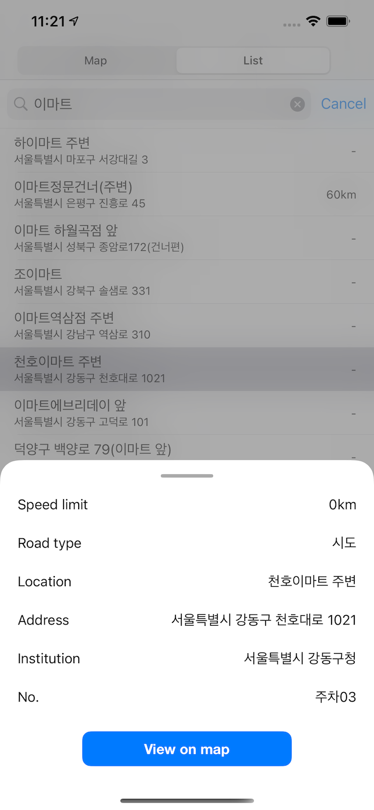

App support for 'Kr. Speed camera'
App download:

Contact us:
If you contact us at kaudo@msn.com, we will respond sincerely.

You can move the map to your current location using location information.
If your location is not in Korea, it is better not to allow it.
You can check the marker showing the speed limit on the map screen.
Touch a marker to display a brief location and address.
In the detailed information, you can check the
speed limit, road type, location, address, and management agency information.
On the list screen, a list of cameras is displayed in order of closest
to the center of the map.
You can filter by entering a search term.

If you touch 'View on map' on the list-detail screen,
it is converted to the map screen and the corresponding marker is displayed.